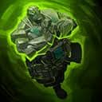
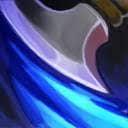
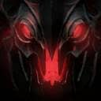
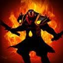

ITEMS
Los "items" son equipos en el juego que brindan a los héroes atributos adicionales y habilidades especiales. La mayoría de los items se pueden comprar en varias tiendas en el mapa del juego, mientras que otros se dejan caer por los pelos de punta. Los elementos de nivel inferior se combinan en elementos de nivel superior, generalmente con la ayuda de una receta. Los héroes tienen seis ranuras para artículos en su inventario, tres en su mochila y seis más en su alijo. Los artículos se pueden recoger y entregar a su propietario con un servicio de mensajería.
A continuación una breve lista de los objetos:
Items Básicos

Consumibles
- Observer Ward
- Sentry Ward
- Enchanted Mango
- Tome of Knowledge
- Tango
- Healing Salve
- Aghanim's Shard
- Clarity
- Smoke of Deceit
- Faerie Fire
- Dust of Appearance
- Town Portal Scroll
- Bottle
Atributos
- Iron Branch
- Mantle of Intelligence
- Circlet
- Belt of Strength
- Robe of the Magi
- Ogre Axe
- Gauntlets of Strength
- Slippers of Agility
- Band of Elvenskin
- Crown
- Blade of Alacrity
- Staff of Wizardry
Equipamiento
- Quelling Blade
- Infused Raindrops
- Blight Stone
- Globes of Haste
- Quarterstaff
- Blitz Knuckles
- Javelin
- Mithril Hammer
- Ring of Protection
- Orb of Venom
- Blades of Attack
- Chainmail
- Helm of Iron Will
- Broadsword
- Claymore
Items Mejorados
Accesorios
- Magic Wand
- Null Talisman
- Soul Ring
- Flacon Blade
- Oblivion Staff
- Perseverance
- Hand of Midas
- Boots of Travel
- Helm of the Overlord
- Bracer
- Wraith Band
- Orb of Corrosion
- Power Treads
- Phase Boots
- Mask of Madness
- Helm of the Dominator
- Moon Shard
Soporte
SKILLS
Los modelos de habilidades de héroes son una amplia variedad de criaturas y unidades que actúan conjuntamente con héroes específicos. Pueden activarse cuando el héroe haya alcanzado cierto nivel o lance ciertos hechizos. No todos los héroes usan un modelo de habilidad. Cuando corresponda, estos se pueden previsualizar en el equipamiento de Dota 2 para ese héroe.
Fuerza

Dragon Knight
Earth Spirit

Lycan

Spirit Breaker

Pudge
Agilidad
Anti-Mage
Shadow Fiend

Troll Warlord
Ember Spirit

Faceless Void
Inteligencia

Rubick

Warlock

Invoker

Storm Spirit